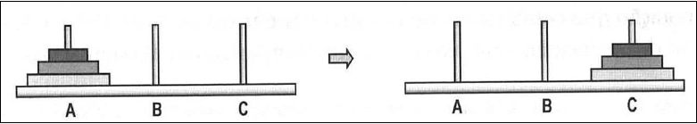
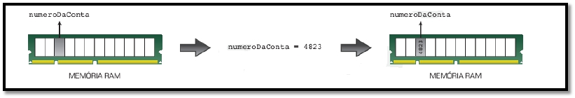

Conceitos Básicos
Created by Fernando Marques
Avaliação de Um Minuto
- Dificuldade em formalizar as instruções
- Entender o passo a passo, principalmente na hora de repetir os passos. Por está acostumado a usar o excel, tive bastantre dificuldade na hora de somar os valores que estavam em uma determinada celula e exibir o resultado na mesma celula
Etapas de Desenvolvimento de um programa
- Análise
- Algoritmo
- Codificação
- Teste*

Noções de Lógica
- Lógica é a ciência que estuda as formas de pensamento
- A lógica nos acompanha diariamente:
- Um bebê sabe que precisa chorar para receber atenção.
- Um casal com 3 filhos notou que um vaso estava quebrado, enquanto 2 das crianças estavam na escola. Quem é o culpado?
- Se um carro está com a seta esquerda ligada. Significa que ele vai virar à direita ou à esquerda?
- O pensamento (e a lógica) pode ser expresso por meio da linguagem oral ou escrita.
Noções de Lógica
- Existe lógica no nosso dia-a-dia?
- Todo mamífero é um animal.
- Todo cavalo é um mamífero.
- Portanto, todo cavalo é um animal.
- Anacleto é mais velho que Felisberto.
- Felisberto é mais velho que Marivaldo.
- Portanto, Anacleto é mais velho que Marivaldo.
Noções de Lógica - Exercitando
Três senhoras - dona Branca, dona Rosa e dona Violeta – passeavam pelo
parque quando dona Rosa disse:
- Não é curioso que estejamos usando vestidos de cores branca, rosa e
violeta, embora nenhuma de nós esteja usando um vestido de cor igual ao
seu próprio nome?
- Uma simples coincidência – respondeu a senhora com o vestido violeta.
Qual a cor do vestido de cada senhora?
Algoritmos Conceitos
- “Algoritmo é uma sequência de passos que visa atingir um objetivo bem definido.”
- “Algoritmo é a descrição de uma sequência de passos que deve ser seguida para a realização de uma tarefa.”
- “É uma sequência finita de instruções ou operações cuja execução, em tempo finito, resolve um problema computacional, qualquer que seja sua instância.”
- "São regras formais para a obtenção de um resultado ou da solução de um problema, englobando fórmulas de expressões aritméticas.
- No nosso dia-a-dia: Receita de bolo, orientação para se chegar em algum endereço, realização de alguma tarefa rotineira.
Algoritmos - O que é?
- Uma sequencia de instruções que resolve uma determinada tarefa
- Essas instruções podem ser executadas por um computador ou até mesmo por um ser humano.
- Um algoritmo pode ser comparado a uma receita de bolo, onde cada passo da preparação do bolo corresponde a uma instrução do algoritmo.
Algoritmos Exemplo - Sacar dinheiro no banco 24 horas
- Ir até um banco 24 horas.
- Colocar o cartão.
- Digitar a senha.
- Solicitar a quantia desejada.
- Se o saldo for maior ou igual à quantia desejada, sacar; Caso contrário, mostrar mensagem de impossibilidade de saque.
- Retirar o cartão.
- Sair do banco 24 horas.
Trocar Lâmpada - Parte 1

- Acionar o interruptor. Se a lâmpada não acender, então:
- Pegar uma escada.
- Posicionar a escada embaixo da lâmpada
- Buscar uma lâmpada nova.
- Subir na escada.
- Retirar a lâmpada queimada
Trocar Lâmpada - Parte 2
- Colocar a lâmpada nova.
- Descer da escada.
- Acionar o interruptor.
Algoritmos - Torre de Hanoi
- As Torres de Hanói é um quebra-cabeça composto por uma base contendo três torres (A, B e C) e três discos de diâmetros distintos (1, 2 e 3). Neste quebra-cabeça, o objetivo é encontrar uma forma de mover todos os discos da torre A para a torre C, usando a torre B como espaço auxiliar, de modo que:
- apenas um disco seja movido de cada vez
- nenhum disco seja posicionado sobre outro disco de diâmetro menor
- os discos sejam imediatamente transferidos de uma torre para outra
Algoritmos - Torre de Hanoi
Algoritmos - Torre de Hanoi - Solução
1º passo: mova o disco do topo da torre A para o topo da torre C.
2º passo: mova o disco do topo da torre A para o topo da torre B.
3º passo: mova o disco do topo da torre C para o topo da torre B.
4º passo: mova o disco do topo da torre A para o topo da torre C.
5º passo: mova o disco do topo da torre B para o topo da torre A.
6º passo: mova o disco do topo da torre B para o topo da torre C.
7º passo: mova o disco do topo da torre A para o topo da torre C.
Tipos de Algoritmos - Descrição Narrativa
- A descrição narrativa consiste em analisar o enunciado do problema e escrever, utilizando uma linguagem natural (por exemplo, a língua portuguesa), os passos a serem seguidos para sua resolução.
- Vantagem: não é necessário aprender nenhum conceito novo, pois uma língua natural, neste ponto, já é bem conhecida.
- Desvantagem: a língua natural abre espaço para várias interpretações, o que posteriormente dificultará a transcrição desse algoritmo para programa.
Tipos de Algoritmos - Fluxograma
- É uma descrição precisa e detalhada de um algoritmo, feita em uma notação que combina elementos gráficos e textuais.
- Vantagem: o entendimento de elementos gráficos é mais simples que o entendimento de textos.
- Desvantagem: é necessário aprender a simbologia dos fluxogramas e, além disso, o algoritmo resultante não apresenta muitos detalhes, dificultando sua transcrição para um programa.
Tipos de Algoritmos - Pseudocódigo
- Consiste em analisar o enunciado do problema e escrever, por meio de regras predefinidas, os passos a serem seguidos para sua resolução.
- Vantagem: a passagem do algoritmo para qualquer linguagem de programação é quase imediata, bastando conhecer as palavras reservadas da linguagem que será utilizada.
- Desvantagem: é necessário aprender as regras do pseudocódigo.
Conceito de Variável
- Um algoritmo e, posteriormente, um programa, recebem dados que precisam ser armazenados no computador para serem utilizados no processamento.
- Todos os computadores trabalham com sistema numérico binário 0011
- Cada dígito binário ocupa uma porção de memória chamada bit, e 8 bits é denominado byte
- Cada byte é identificado e acessado por meio de um endereço.
Conceito de Variável
- Uma variável é associada a uma posição da memória RAM
- Toda variável possui um nome (um identificador).
Tipos de Dados - Numéricos
- Se dividem entre reais e inteiros
- Os números inteiros podem ser positivos ou negativos e não possuem parte fracionária
- Os números reais podem ser positivos ou negativos e possuem parte fracionária
- Os números reais seguem a notação da língua inglesa, ou seja, a parte decimal é separada da parte inteira por um ponto, e não por uma vírgula.
Tipos de Dados - Lógicos
- Também são chamados de booleanos
- Possuem valores Verdadeiro ou Falso
Tipos de Dados - Caracteres
- São dados formados por um único caractere ou por uma cadeia de caracteres. Esses caracteres podem ser letras maiúsculas, as letras minúsculas, os números (não podem ser usados para cálculos) e os caracteres especiais (&, #, @, ?, +).
- Um caractere é representado entre aspas simples e um conjunto de caracteres é representado entre aspas duplas.
Formação de Identificadores
- Identificadores são nomes de variáveis, programas, constantes, rotinas, unidades etc.
- Devem seguir as regras:
- Os caracteres permitidos são: números, letras maiúsculas, letras minúsculas e o caractere sublinhado (_).
- O primeiro caractere deve ser sempre uma letra ou o caractere sublinhado.
- Não são permitidos espaços em branco e caracteres especiais (@, $, +, -, %, !).
- Não podemos usar as palavras reservadas nos identificadores, ou seja, palavras que pertençam à linguagem de programação.
Exemplos de Identificadores válidos
| nota | NOTA | X5 | A32 |
| Nota1 | MATRICULA | nota_1 | _valor |
Exemplos de Identificadores inválidos
| 5b | por começar com número |
| e 12 | tem espaço em branco |
| x-y | tem caracter especial '-' |
| nota(2) | tem caracteres especiais () |
| if | por ser palavra reservada |
Exercícios
- Preencher a enquete Avaliação de Um Minuto